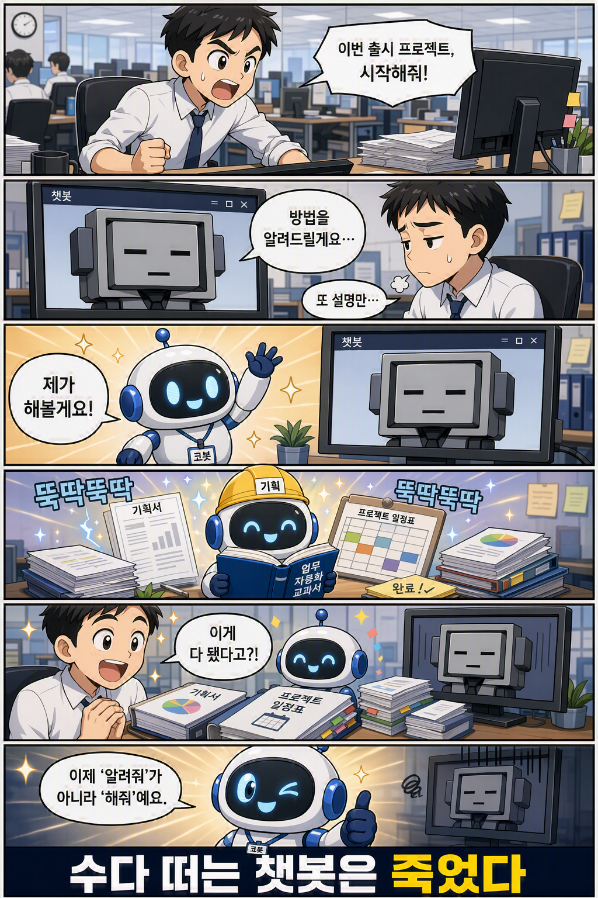

1부. 왜 지금인가 — 에이전틱 전환과 신버전 읽기

학습만화로 먼저 만나기 — 답만 하던 챗봇의 시대가 저물고, 일을 끝내는 에이전트가 온다.
무언가를 만들기 전에 ‘왜’를 먼저 묻는다. 1부는 도구 사용법을 가르치지 않는다. 대신 한 가지 전환을 이해시킨다. 답만 하는 챗봇의 시대가 저물고, 목표를 받아 스스로 추론하고 일을 끝내는 에이전트의 시대가 왔다는 것이다.
1부에서 우리는 다섯 개의 물음을 차례로 통과한다. 왜 지금 에이전트인가(1장 챗봇은 죽었다), 무엇이 새로워졌고 Microsoft는 왜 Copilot Studio를 통째로 다시 지었는가(2장 새로 지은 집), 무엇을 만드는가 — 판단하는 코봇과 절차를 지키는 플로봇(3장 두 갈래 길), 누가 만들 수 있는가 — 코딩이 아니라 업무 이해가 자격이다(4장 지침이 곧 실력), 그리고 그 모든 것이 어떻게 한 화면에 담기는가(5장 화면은 주장이다).
2장은 한 걸음 깊다. New Copilot Studio가 왜 ‘UI 리뉴얼’이 아니라 ‘AI 코어 재건축’인지, 클래식(옛 경험)과 신버전 사이에 벌어진 갭을 정면으로 다룬다. 새 에이전트 경험과 새 워크플로우가 각각 무엇인지도 이 장에서 처음 만난다 — 더 깊은 런타임 해부는 부록 F에 따로 두었다.
1부가 끝나면 손에는 아직 코봇이 없다. 그러나 더 중요한 것을 쥐게 된다. 이 책 전체를 관통하는 사고의 틀 — 일을 판단과 절차로 나누고, AI 직원을 키운다는 관점이다. 동기와 지도를 갖췄으면, 2부에서 첫 코봇을 실제로 만든다.